| Function | Element | Geometry |
|---|---|---|
| Basic functions | ||
| tm_polygons() | polygons (borders and fill) | polygons |
| tm_symbols() | symbols | points, polygons, and lines |
| tm_lines() | lines | lines |
| tm_text() | text | points, polygons, and lines |
| tm_raster() | raster | raster |
| tm_basemap() | tile | |
| tm_tiles() | tile | |
| Derived functions | ||
| tm_borders() | polygons (borders) | polygons |
| tm_fill() | polygons (fill) | polygons |
| tm_bubbles() | bubbles | points, polygons, and lines |
| tm_dots() | dots | points, polygons, and lines |
| tm_markers() | marker symbols | points, polygons, and lines |
| tm_square() | squares | points, polygons, and lines |
| tm_labels() | text labels | points, polygons, and lines |
| tm_labels_highlighted() | text labels with background | points, polygons, and lines |
| tm_iso() | lines with text labels | lines |
| tm_rgb()/tm_rgba() | raster (RGB image) | raster |
6 Layers
Map layers are the main building blocks of a map. They specify how the specific data should be visualized – for example, as polygons, symbols, lines, text labels, or raster. There is also an interplay between the data and the map layers: raster data can be plotted with the tm_raster() or tm_rgb() functions, while point data can be visualized with tm_symbols(), tm_dots(), tm_bubbles(), tm_markers(), or tm_squares(). Moreover, some data types can be simplified and shown with a different geometry, such as polygons that are usually visualized with tm_polygons() but can also converted into centroids and plotted with tm_symbols().
Each dataset may have one or more layers, and each layer can be visualized in different ways. For example, a dataset with polygons can be visualized using tm_polygons() to display the polygon areas, and then the names of the polygons can be added with tm_text().
Table 14.1 shows the available map layers in tmap. They are divided into two groups: basic functions and derived functions. The basic functions are the main functions for visualizing data, are useful for most cases, and are highly customizable. The derived functions are built on top of the basic functions but with different default values aimed at specific use cases.
In this chapter, we focus on what map layers are available in tmap and how they differ. Chapter 7, on the other hand, is all about how to present information given in variables using colors, sizes, and shapes.
6.1 Polygons
The main function of visualizing polygons is tm_polygons(). By default, it plots areas of polygons in light gray (gray85) and polygons borders in slightly dark gray (gray25).
tm_shape(slo_borders) +
tm_polygons()Both, colors of areas (polygons’ fillings) and colors of borders can be modified using the fill and col arguments (Figure 6.1 (a)).
tm_shape(slo_borders) +
tm_polygons(fill = "lightblue", col = "black", lwd = 0.5, lty = "dashed")In fact, tm_polygons() is a combination of two separate functions: tm_fill() and tm_borders(). The tm_fill() function fills polygons with a fixed color or a color palette representing a selected variable (Figure 6.1 (b)).
The tm_borders() function draws the borders of the polygons only (Figure 6.1 (c)). It allows you to change the colors of borders, their widths, or the lines type.
tm_shape(slo_borders) +
tm_borders(col = "black", lwd = 0.5, lty = "dashed")
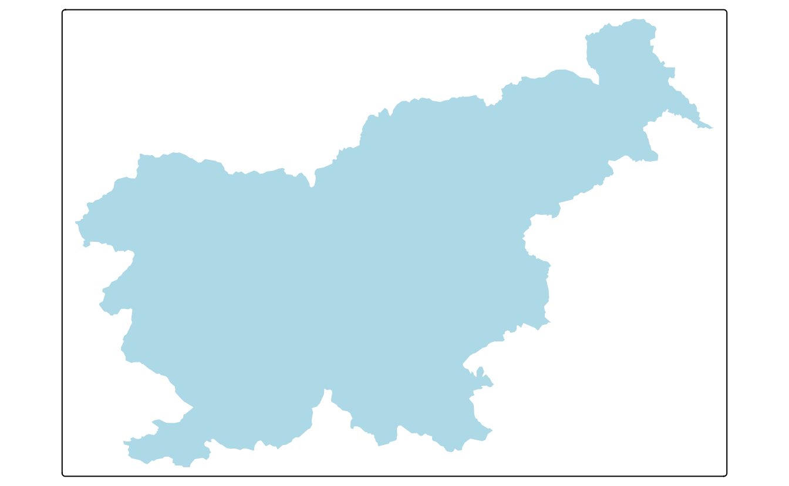
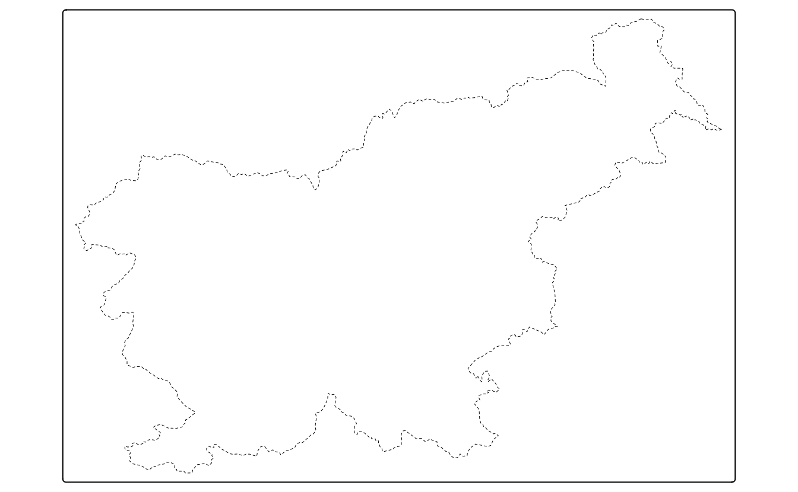
More information on colors and how they can be applied and modified is explained in detail in Section 7.3.
6.2 Symbols
slo_cities = read_sf("data/slovenia/slo_cities.gpkg")Symbols are a versatile type of layer. They are usually used to represent point data but can also be used for lines and polygons. In the latter cases, they are located in the centroid coordinates of each feature. Their flexibility is also related to the ways symbols can be visualized – it is possible to show values of a given variable by colors of symbols, their sizes, or shapes (more about that is explained in Chapter 7).
The tm_symbols() is the main function in tmap, allowing to use and modify symbol elements (Figure 6.2). By default, this function draws a gray circle symbol with a black border for each element of an input feature.

In the above example, each symbol is related to one feature (row) in the slo_cities object. However, in a case when we provide multi-element features (such as MULTIPOINT; see Section 2.2.1), each multi-element object is first split into a number of single-element features and then plotted.
The tm_symbols() is a very flexible function with a large number of arguments. While this allows adjusting its results to almost any need, it also makes this function complicated. Therefore, four additional layers are implemented in tmap: tm_squares(), tm_bubbles(), tm_dots(), tm_markers(). All of them use tm_symbols(), but with different default values.
tm_squares() uses square symbols (shape = 22) instead of circles (shapes = 21) (Figure 6.3 (a)).
tm_shape(slo_cities) +
tm_squares()Next, tm_bubbles() uses circles with a larger size value than the default one (Figure 6.3 (b)).
tm_shape(slo_cities) +
tm_bubbles()The main role of tm_dots() is to present many locations at the same time. To do this, this layer has a small size value (0.02) at the default (Figure 6.3 (c)).
The last additional layer is tm_markers(), which uses a marker icon by default (Figure 6.3 (d)).
tm_shape(slo_cities) +
tm_markers()
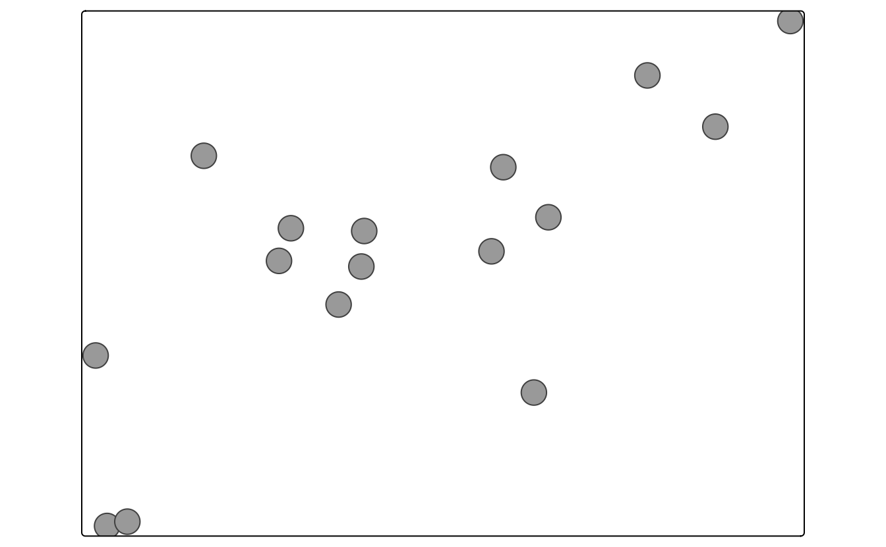
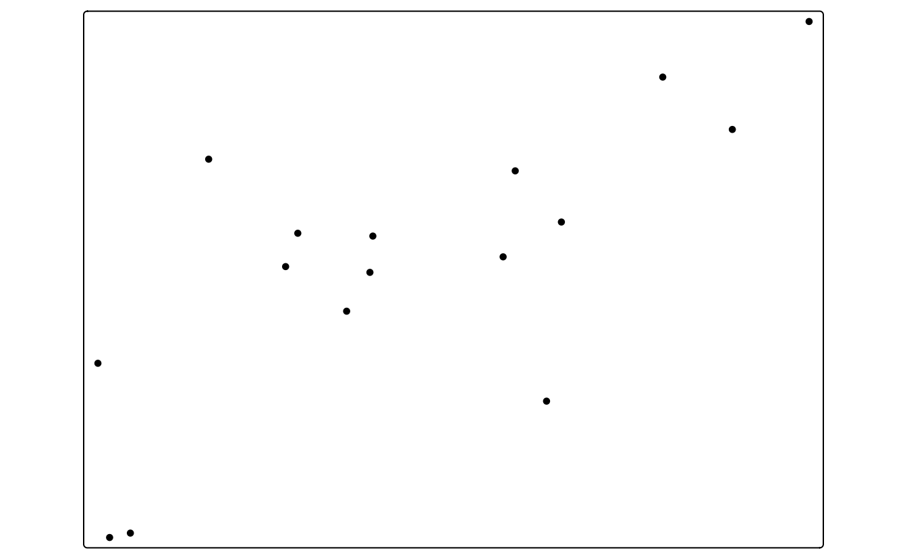
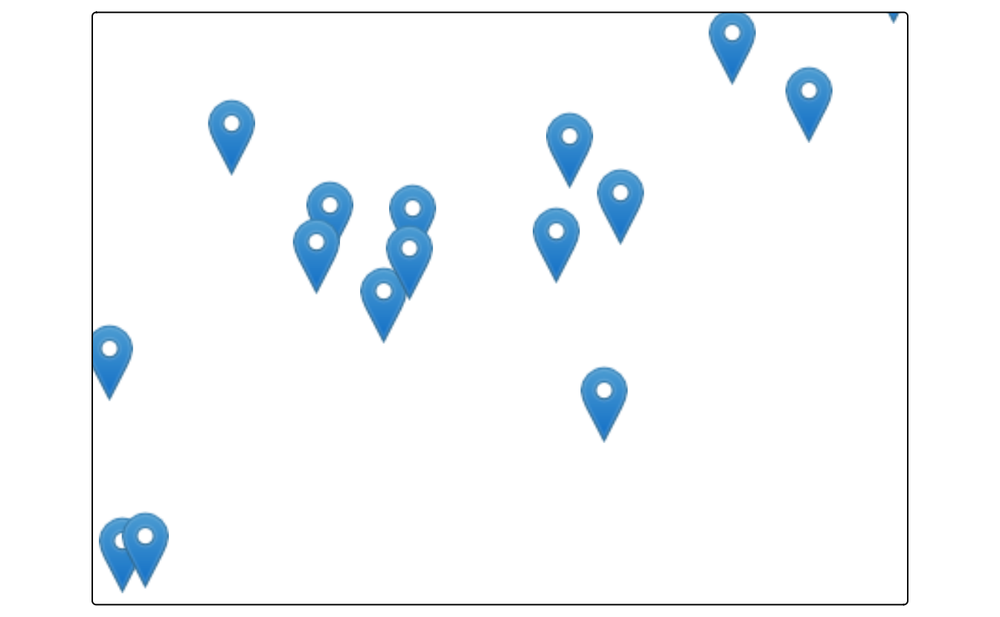
In Section 7.4 and Section 7.5, we learn how to modify the size and shape of symbols, including creating custom shapes.
6.3 Lines
slo_railroads = read_sf("data/slovenia/slo_railroads.gpkg")The tm_lines() function allows the visualization of different types of line data (Figure 6.4).

Lines can be presented using different colors, widths, or types (Chapter 7). This allows to show a hierarchy (for example, increased line widths for higher capacity roads) or distinguish between types of objects (for example, blue rivers comparing to gray roads).
6.4 Text
Text labels are often an integral part of many maps. They can serve several functions, from naming features, indicating relations between them, or representing a given variable’s values. The primary function for creating text labels is tm_text(), which adds a label to each spatial feature (Figure 6.5 (a)).
tm = tm_shape(slo_borders) +
tm_polygons() +
tm_shape(slo_cities) +
tm_dots()
tm +
tm_text(text = "name")Two additional functions for adding text labels are tm_labels() and tm_labels_highlighted(). They are similar to tm_text(), but have different defaults. The tm_labels() function is used to add text labels to the map, but also tries to automatically adjust the position of the labels to avoid overlapping with other features (Figure 6.5 (b)).
tm +
tm_labels(text = "name")The tm_labels_highlighted() additionally adds a background color to the labels, which makes them more visible (Figure 6.5 (c)).
tm +
tm_labels_highlighted(text = "name")
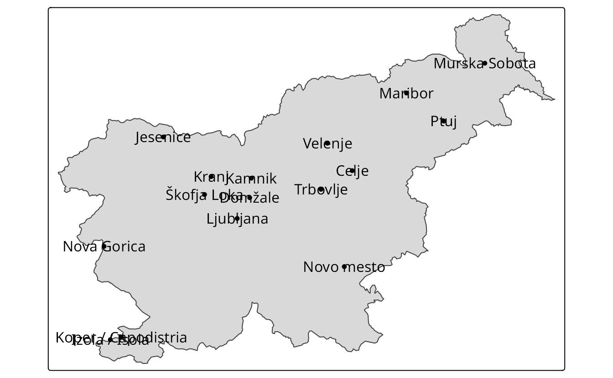
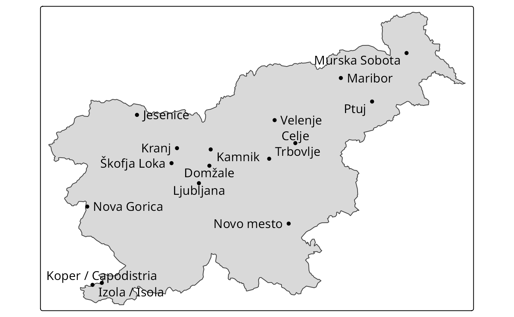
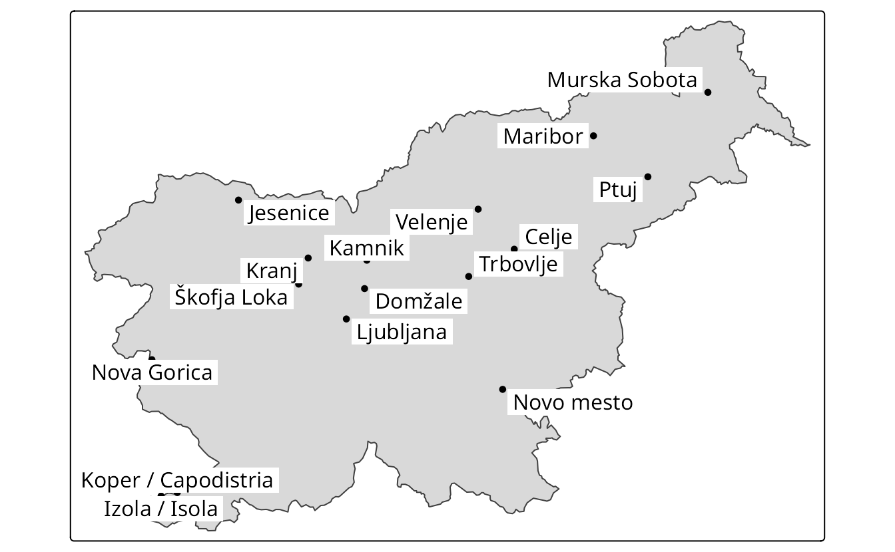
In the above examples, the text argument specifies the name of a variable that will be used for text labels. We can further adjust colors (col; Section 7.3), sizes (size; Section 7.4), font faces (fontface; Section 12.3), and background colors (bgcol) of labels by providing either a single value or the name of a data variable.
The tm_text(), tm_labels(), and tm_labels_highlighted() functions have many arguments that allow us to adjust the appearance of text labels. It includes arguments related to the x and y offset of the text labels (xmod and ymod), and the rotation angle (angle). Figure 6.6 (a) shows an example of a map with text labels moved a bit to the right and down, and rotated by 12 degrees.
tm +
tm_text(text = "name", xmod = 1, ymod = -0.5, angle = 12)Text labels can be further modified with the opt_tm_text() function provided to the options argument. It includes a set of arguments that allow for the adjustment of the text labels’ appearance, such as shadow, just, and remove_overlap (Figure 6.6 (b)).
tm +
tm_text(text = "name", xmod = 1, ymod = -0.5, angle = 12,
options = opt_tm_text(shadow = TRUE,
just = "left",
remove_overlap = TRUE))To automatically adjust the position of text labels to avoid overlapping with other features, we can use the point.label argument in the opt_tm_text() function. When set to TRUE, it will use an algorithm to find the best position for each label, which can be useful when there are many overlapping features or when the labels are too close to each other.
tm +
tm_text(text = "name",
options = opt_tm_text(point.label = TRUE))
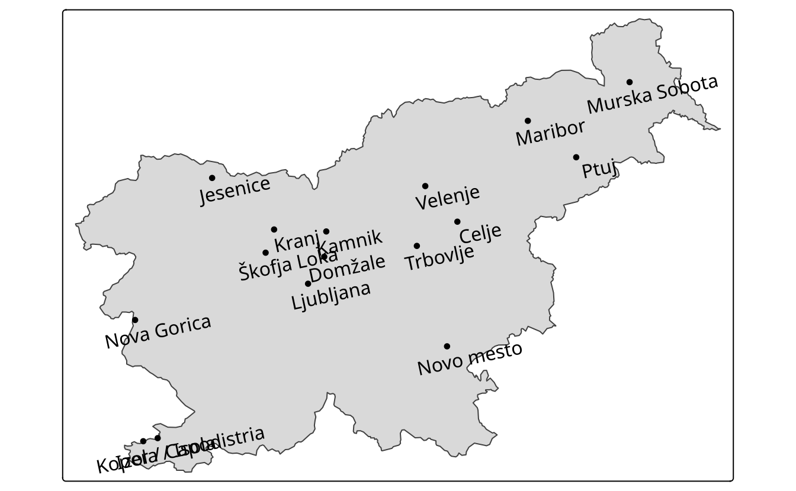
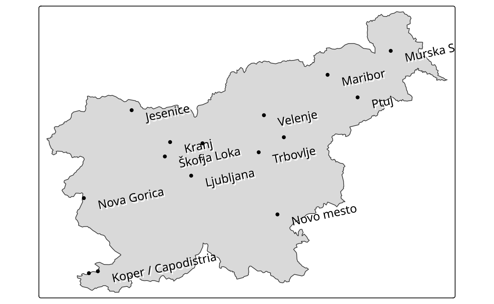
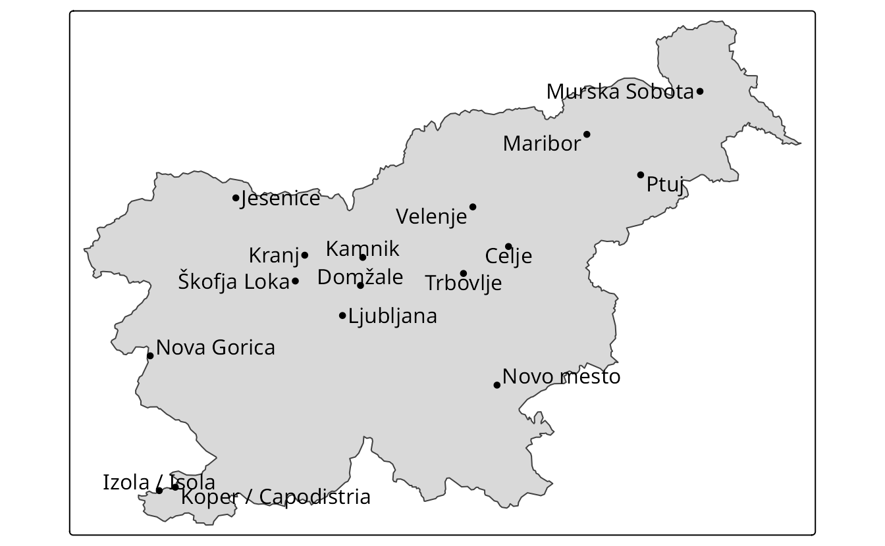
Text labels can be added to spatial (multi-)points, (multi-)lines, and (multi-)polygons, and each case is quite different. The simplest case is for POINT data, for which each text label will be located precisely in the coordinates of the given points (Figure 6.5). However, how to add text labels to multipoints, lines, multilines, polygons, or multipolygons? Should each label correspond to one spatial feature, or should every sub-feature have its own label? Where should the labels be placed for lines or polygons – in the center of a line and the centroid of a polygon, or somewhat different? The above decisions can be made with the options argument of the tm_text() function. By default, text labels are placed in the centroid of each feature; however, we can change this behavior with the point_per argument. The possible options are "feature" (default), "segment", and "largest". The "segment" option labels each subfeature (e.g, each point in a multipoint, each segment in a multilines, and each polygon in a multipolygon) and the "largest" option labels only the largest subfeature (e.g., the largest segment in a multilines or the largest polygon in a multipolygon).
Text labels are also often presented together with lines (Section 6.3). One example is an isopleth—a line drawn on a map through all points with the same value of a given variable, such as atmospheric pressure or elevation. Isopleths can be created with the tm_iso() function. This function combines tm_lines() and tm_text(), where text labels are placed on the isopleths along the lines. In the example below, we create contour lines (isopleths) from the elevation raster data of Slovenia, and then we plot them on the map with text labels (Figure 6.7).
library(terra)
slo_elev = rast("data/slovenia/slo_elev.tif")
slo_contours = as.contour(slo_elev, nlevels = 4)
tm_shape(slo_borders) +
tm_borders() +
tm_shape(slo_contours) +
tm_iso()
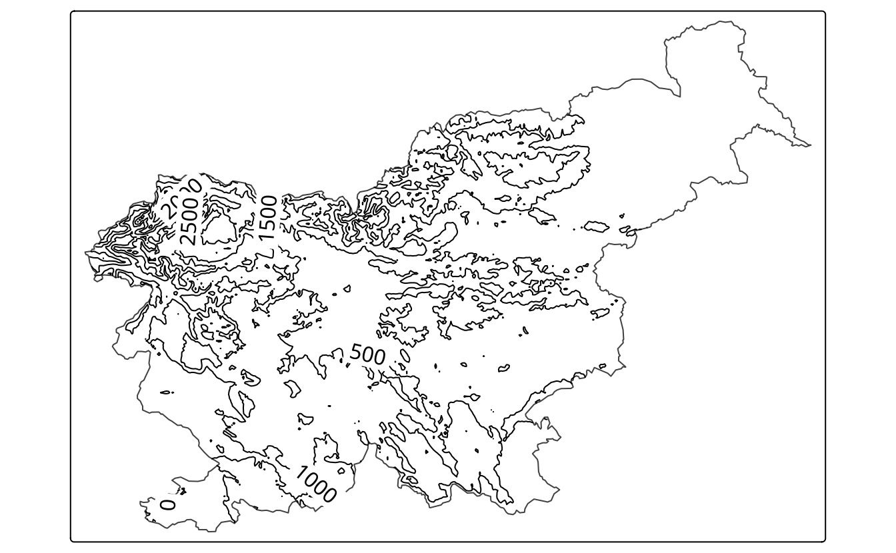
6.5 Raster
library(stars)
slo_elev = read_stars("data/slovenia/slo_elev.tif")
slo_gm = read_stars("data/slovenia/slo_gm.tif")Visualization of raster data depends on the raster type (continuous or categorical), its resolution, and the number of layers. Figure 19.1 shows two simple examples of continuous and categorical raster visualizations created with tm_raster(). This function attempts to recognize the type of a given raster – when the input raster is continuous then the pretty style is used (Figure 6.8 (a)).
However, the continuous scale (tm_scale_continuous()) may better represent phenomena that progressively vary in space – as you can see in Section 8.6.
On the other hand, when the given raster is categorical, then tm_raster() uses tm_scale_categorical() automatically (Figure 6.8 (b)).

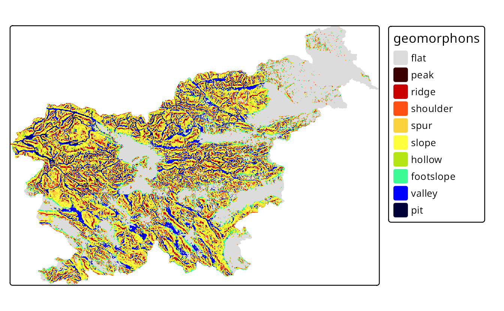
We can also adjust the legend title, used colors, and many more, in a similar fashion as in the previously mentioned layers.
The above examples used a raster with one layer only. However, rasters can have many layers, either represented by layers from the terra package or dimensions and attributes from the stars package. By default, tmap shows all of the layers, where each raster has its own legend.
We can modify their arrangement with tm_facets() (Figure 6.9).
tm_shape(raster2) +
tm_raster() +
tm_facets(ncol = 1) +
tm_layout(panel.labels = c("Elevation", "Geomorphons"))
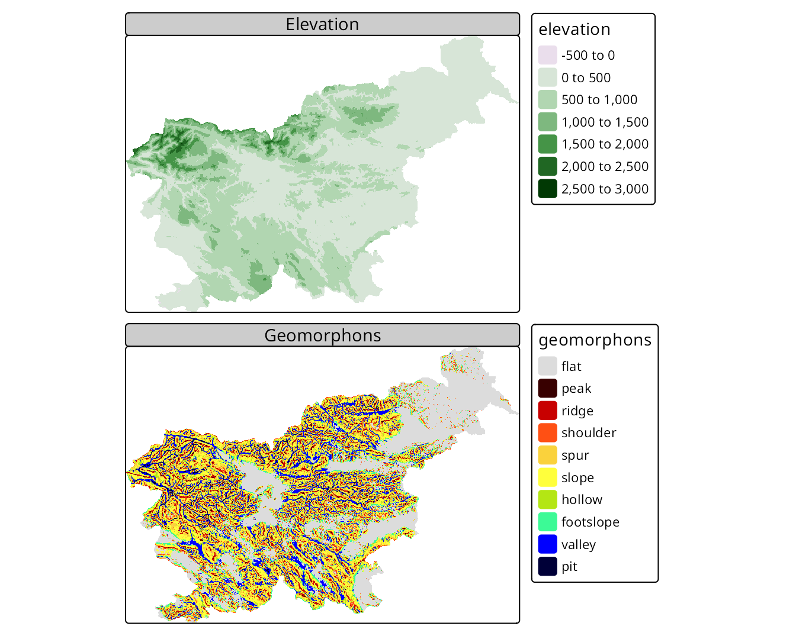
If you want to learn more – we focus on how to modify map layout in Chapter 12 and how to specify and modify facets (also known as small multiples) in Chapter 16.
6.6 Tile
Tile layers can be used for two purposes: either as a basemap or an overlay layer. By default, three basemaps are used in the interactive mode (tmap_mode("view")): "Esri.WorldGrayCanvas", "OpenStreetMap", and "Esri.WorldTopoMap". However, we can change the basemaps with a vector with the names of the tile layers’ providers (Figure 6.10).
tmap_mode("view")
tm_basemap(c(StreetMap = "OpenStreetMap", TopoMap = "OpenTopoMap")) +
tm_shape(slo_cities, is.main = TRUE) +
tm_dots(col = "red", group = "slo_cities")In the above code, we made two basemaps available: "OpenStreetMap" and "OpenTopoMap", and for the map legend purpose, we renamed them as StreetMap and TopoMap. A complete list of available basemaps is in the leaflet::providers object and on the https://leaflet-extras.github.io/leaflet-providers/preview/ website1. The tm_basemap(NULL) function allows to disable basemaps entirely.
The tm_tiles() function, on the other hand, draws the tile layer on the top (as an overlay layer) of the previous tm_ layer. In the next example, we put the vector "CartoDB.PositronOnlyLabels" tiles on top of the previously set basemaps, but below the dots layer (Figure 6.11).
Tile layers are usually created to be used interactively. We can see it, for example, by the number of details varying depending on the zoom level we set. That being said, many people find them useful also for static maps, and tmap allows us to use them in this way. It uses the maptiles package to download the tiles and then plot them as a raster layer.
A complete list of available providers and some information about zoom levels are in the help file of the ?maptiles::get_tiles() function. Different map tiles providers offer unique map styles, while zoom levels relate to different levels of detail – the larger level, the more details we will get. When using map tiles, we should also consider adding their attribution to the map. Attribution for each provider can be obtained using the maptiles::get_credit() function by specifying the provider name, for example, get_credit("CartoDB.VoyagerNoLabels").
The code below plots the "CartoDB.VoyagerNoLabels" tiles in the background, adds the island outline in light blue color, and puts attribution text in the bottom right corner of the map (Figure 6.12)).
tmap_mode("plot")
#> ℹ tmap mode set to "plot".
tm_basemap("CartoDB.VoyagerNoLabels") +
tm_shape(slo_borders) +
tm_borders(lwd = 5, col = "lightblue") +
tm_credits(maptiles::get_credit("CartoDB.VoyagerNoLabels"),
bg.color = "white")
"CartoDB.VoyagerNoLabels" tile layer.
Additional details can be found in the
leaflet::providers.detailsobject↩︎